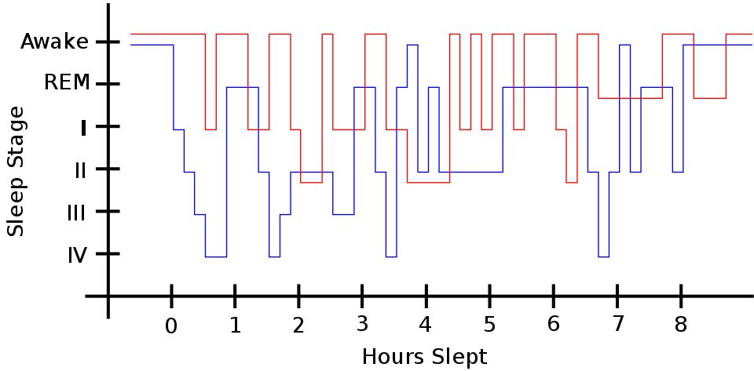

General information only. It does not replace advice from a health professional. For sudden neurological symptoms, call emergency services.


What it is
Restless legs syndrome, also called Willis-Ekbom disease, is a neurological disorder that causes an irresistible urge to move the legs, almost always accompanied by unpleasant sensations in them: tingling, burning, "fizzy water in the veins", pulling or pain. It affects 5 to 10% of European adults, although only in 2-3% is it severe enough to need treatment. It is twice as common in women and increases with age.
The four criteria
- An urgent need to move the legs, with or without discomfort.
- It starts or gets worse at rest, sitting or lying down.
- It improves with movement, walking or stretching, for as long as the movement lasts.
- It gets worse in the evening and at night.
Many people also have periodic limb movements during sleep, repeated jerks that fragment rest. The main consequence is insomnia and daytime tiredness.
Causes
- Primary: more than half have a family history, and it usually starts before 45. Genetic risk variants have been identified (such as in MEIS1 and BTBD9). It is linked to a fault in the dopamine system and to a lack of iron in the brain, even when blood iron is normal.
- Secondary:
- Iron deficiency: the most important treatable cause.
- Pregnancy, especially in the third trimester; it usually disappears after birth.
- Kidney failure, especially on dialysis.
- Peripheral neuropathy.
- Medicines: sedating antihistamines, antidepressants (especially mirtazapine and some SSRIs), antipsychotics, anti-sickness drugs such as metoclopramide.
- Alcohol, caffeine, smoking and lack of sleep make it worse.
Diagnosis
It is based on the symptoms. An iron test including ferritin is always done. Medication is reviewed and kidney function and possible neuropathy are assessed. A sleep study is rarely needed.
Treatment
General measures:
- Regular sleep times.
- Avoid caffeine, alcohol and smoking, especially in the evening.
- Regular moderate exercise, stretching, massage, hot or cold baths.
- Activities that keep the mind busy during periods of rest.
- Review and stop medicines that make it worse.
Iron: if ferritin is below 75-100 µg/L, oral or intravenous iron is recommended, and can greatly improve symptoms.
Medicines:
- Gabapentin, pregabalin or gabapentin enacarbil: now the first choice.
- Dopamine agonists (pramipexole, ropinirole, rotigotine patch): effective at first, but over time they can cause augmentation, a paradoxical worsening with more intense symptoms that start earlier and spread to more parts of the body. This is why they are used at the lowest possible dose.
- In severe, resistant cases: low-dose opioids (oxycodone-naloxone).
- Devices that stimulate nerves in the foot or leg in some cases.
Sources
- Manconi M, et al. Restless legs syndrome. Nat Rev Dis Primers. 2021;7:80.
- Allen RP, et al. Restless legs syndrome/Willis-Ekbom disease diagnostic criteria: IRLSSG consensus. Sleep Med. 2014;15:860-73.
- Winkelman JW, et al. Treatment of restless legs syndrome and periodic limb movement disorder: AASM clinical practice guideline. J Clin Sleep Med. 2025;21:137-52.
- Garcia-Borreguero D, et al. Prevention and treatment of RLS augmentation. Sleep Med. 2016;21:1-11.